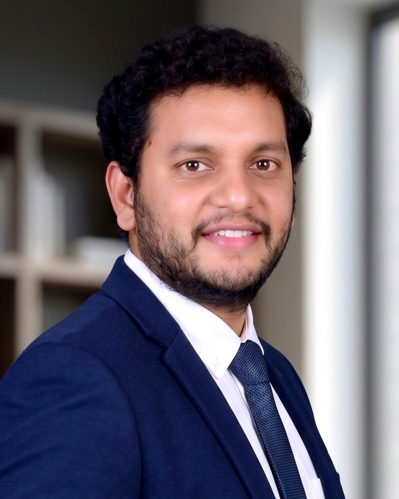

Digital Transformation Manager
8 years advising manufacturing, automotive and MedTech leadership on where technology should — and shouldn't — touch the business. I translate between the shop floor and the boardroom, so digital investment produces measurable enterprise value.

MY APPROACH
Every transformation starts with understanding the real problem. I diagnose what's broken, shape the strategy with leadership, then lead the programme to adoption.
Map current-state (AS-IS) processes, data flows, and stakeholder dynamics. Diagnose: where is technology actually needed? Where would it create waste?
Design the target operating model (TO-BE), digital thread architecture, and business case. Build the transformation roadmap and pressure-test with leadership before committing.
Execute the programme with PMO discipline (RAID, stage gates, steering cadence). Lead teams through change and build the organizational capability to sustain the transformation.
Drive user adoption and value realization post-go-live. Track KPIs (working capital, efficiency, cycle time, adoption) and iterate to make the gains stick.
Systems Expertise
I work across the full stack — PLM (Teamcenter, Windchill), MCAD (Creo, NX, SolidWorks), and ERP (SAP, Oracle) — and understand how to connect them into a coherent digital thread.
Teamcenter governance, BOM management, digital twins, CAD integration, change management and traceability — connecting engineering to operations.
Teamcenter · Windchill · Digital Twin · BOM GovernanceSAP S/4HANA redesigns, Order-to-Cash and Procure-to-Pay workflows, demand planning and inventory optimization — releasing working capital.
SAP S/4HANA · Oracle ERP · IBP/S&OP · O2C/P2PPTC Creo, Siemens NX, SolidWorks integration with PLM. Design-for-Manufacturing discipline. Digital validation environments.
PTC Creo · Siemens NX · SolidWorks · AnsysPMP discipline. PMO governance, RAID management, steering committees, change leadership. I lead the delivery and own adoption outcomes.
PMP · PMO Governance · Change Management · Lean Six SigmaRight Now
Programme Manager · ~€2M programme · 4 business units · 3 sites
The Challenge: Four independent business units operated fragmented Order-to-Cash and Procure-to-Pay workflows; working capital was trapped in inventory and inefficient processes. My Strategy: Mapped AS-IS, diagnosed the root causes (no MTS/MTO logic, arbitrary MOQs, no steering governance), and designed an end-to-end SAP S/4HANA redesign with AI-enabled forecasting and new supply chain rules. Built PMO governance (stage gates, RAID, steering cadence) with role-based change management for 400+ users. Outcomes: €0.7M working capital released (validated against actuals). 70% reduction in manual planning overrides. 90%+ user adoption within 8 weeks — faster than industry benchmarks because users understood *why*, not just *what*.
jayanthchavali9@gmail.com · Open to relocation with visa sponsorship